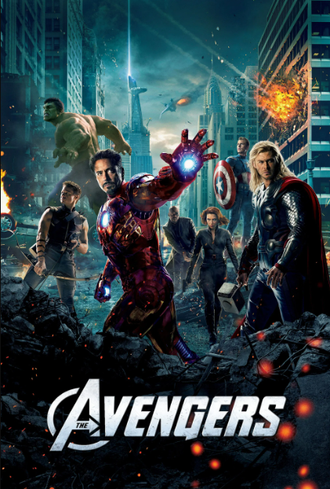
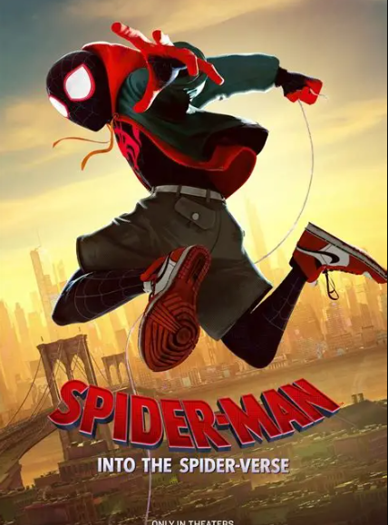
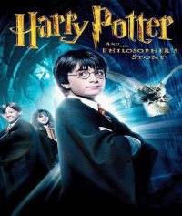
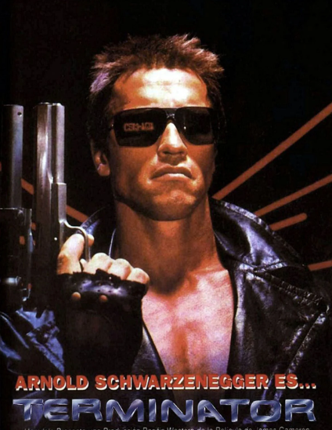
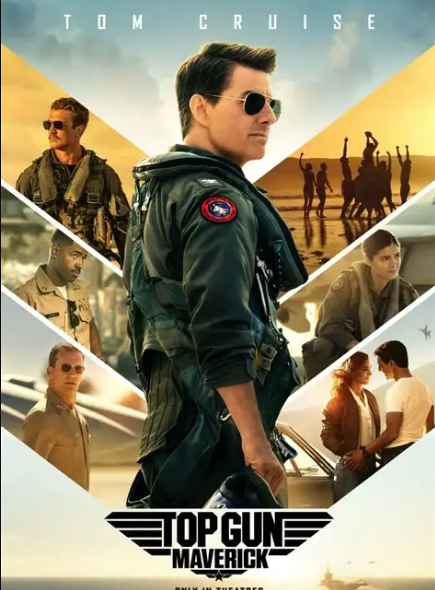

Os Vingadores segue a história de Nick Fury, que após ser ameaçado por Loki, recruta uma equipe de super-heróis para proteger a Terra de uma invasão alienígena. A equipe inclui Homem de Ferro, Capitão América, Thor, Hulk, Gavião Arqueiro e Viúva Negra para salvar a humanidade.

Miles Morales, um jovem negro do Brooklyn, se torna o Homem-Aranha inspirado no legado de Peter Parker, já falecido. Ao visitar o túmulo de seu ídolo em uma noite chuvosa, ele é surpreendido com a presença do próprio Peter, vestindo o traje do herói aracnídeo.

Harry Potter descobre ser um bruxo ao completar 11 anos e é convidado para a Escola de Magia e Bruxaria de Hogwarts.

O Exterminador do Futuro seguea história de um ciborgue enviado do futuro para proteger uma jovem chamada Sarah Connor, que será a mãe de John Connor, o líder da resistência humana contra as máquinas.

Top Gun - Ases Indomáveis" apresenta a história de Pete "Maverick" Mitchell, um piloto da Marinha dos Estados Unidos que se destaca por sua habilidade e coragem em combate. O filme apresenta uma rivalidade entre Maverick e um piloto conhecido como "Iceman", que representa a eficiência e o rigor militar.